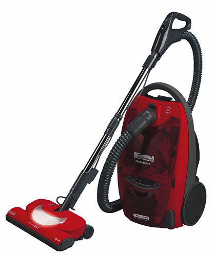
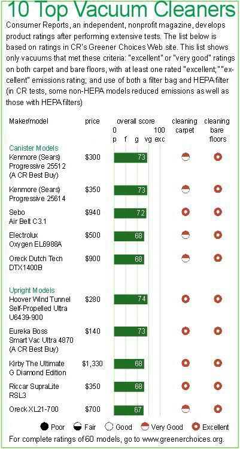

A growing body of scientific evidence shows that indoor air can be more polluted than the air outside. Frequent vacuuming can help reduce levels of allergens such as dust and other particulate matter. Thats especially important if members of your household suffer from asthma or allergies. But some vacuums perform better than others, without emitting dust and dirt back into the air. The more sensitive the members of your household, the more important it is to find a model that not only cleans well but also releases fewer emissions.
The chart shows 10 vacuums that performed well in tests by Consumer Reports magazine (CR) and have low emissions, filter bags and high-efficiency particulate air (HEPA) filters.
Match the task
For the best results, match your vacuum to your cleaning needs. Nearly any vacuum cleans bare floors well, but some types work better on carpets, and others are handier for curtains, upholstery and cleaning underneath sofas. Consider the following factors when looking for the best type of vacuum for your situation:
Upright vacuums are better than canister models for cleaning carpets. They also cost the least overall and are easy to store.
Canister vacuums are better for cleaning drapes, upholstery, under furniture and other spots that require a hose and tools.
Cordless vacuums are best for light-duty jobs, but typically dont clean carpets well, although some models do handle bare floors nicely.
Stick and hand vacuums are miniatures that typically lack the power of full-size vacuums. Theyre handy for small, quick jobs, and many are cordless.
Central vacuums carry dust through a network of tubing inside the homes walls connected to a central suction unit, often located in the basement or garage. They provide canisterlike cleaning, but you dont have to pull the machine around the house. Because the collector is remote, fine dust isnt recirculated, and these systems have a larger capacity than traditional vacuums, meaning less frequent emptying. But theyre pricey and usually require professional installation.
Make the right choice
Be sure to choose a vacuum with low emissions, such as those listed on Page 66, especially if family members have respiratory problems. A vacuum that doesnt release much dust or other particulates back into the air as you clean means a cleaner home. And dont rely on filter claims alone. Many claims are made about vacuums with special microfiltration systems, such as HEPA filters. Its true that HEPA filters have been effective at reducing particulate matter and have been recommended for asthma sufferers, but many models without them have performed just as well in CRs emissions tests. Such vacuums also may cost less than HEPA models. The bottom line: The amount of dust emitted depends as much on the design of the entire machine as on its filter.
Avoid bagless models. They can help to reduce the number of disposable bags in the waste stream, but emptying their bins can raise enough dust to bother even people without allergies. Whats more, the bag may be a major part of the filtration system. If you have a bagless model, be sure to wear a dust mask when emptying the bin.
Strong airflow is especially important if you often clean with brushes, wand extensions or other accessories. A vacuum with strong airflow through its hose will maintain suction as its bag or bin fills with dust, reducing the frequency with which you must dispose of bags or empty bins.
Research and look for features that improve cleaning. Fancy options and high prices dont necessarily mean better cleaning, but a few features do help. A model with manual pile-height adjustment can help get carpets cleaner by letting you raise or lower the powerhead for gentler or more aggressive action. When using tools or cleaning bare floors, a brush on/off switch will help you avoid scattering dust.
Value in a vacuum
You can do several things to get the most value from your vacuum and the cleanest indoor air. To avoid having to dispose of your vacuum prematurely, choose one with a warranty that guarantees repairs for several years. Maintain the vacuum to help ensure that it continues to perform at its best. Change bags about once a month (or as soon as theyre full) and filters about every six months. Manufacturers recommendations vary, so make sure you read and follow their instructions.
You can reduce dust and particulates inside your home and thereby cut down on the need for vacuuming by minimizing their sources. Encourage family members and guests to take off their shoes at the door (or at least wipe their feet on an outdoor mat).
Vacuuming once or twice per week, depending on your household, can be essential for cleaner indoor air, provided your vacuum cleans well and has low particulate emissions.
To learn more about the importance of clean indoor air, visit the indoor air quality Web site of the Environmental Protection Agency (www.epa.gov/iaq). Another resource is the American Lung Association (www.lungusa.org; then search for indoor air quality).
Recycling and disposal
Should you fix your old vacuum? That depends on its age and condition, whats broken and the repair cost. In general, you should have a vacuum cleaner repaired if its under warranty, but replace it if the repair would equal more than half the cost of a comparable new model. If you are satisfied with the machines performance, consider repair for uprights up to seven years old and canisters up to eight years old, especially if the repair isnt expensive.
If you decide to upgrade, but your old vacuum still works, find a new home for it through online auction sites such as eBay (www.ebay.com) or giveaway sites such as Freecycle (www.free cycle.org). These, along with time-honored options such as yard sales, make it easier than ever to pass on unwanted, but still useful, items. Or, you can donate your machine to a local charity. Visit Earth 911 (www.earth911.org) to find a listing of donation sites in your area.
Green Ratings
A condensed version of Consumer Reports Green Ratings of vacuum cleaners appears at left.
For more information, visit www.greenerchoices.org and click vacuum cleaners. There, you can compare upright and canister models; find vacuums with low emissions that performed well in CRs cleaning tests; view the emissions performance of vacuums with and without filters; compare vacuums that come with and without bags; find a vacuum with strong airflow; and compare vacuums with features such as manual pile-height adjustment and brush on/off switches.
|
 KENMORE/SEARS BRANDS |
 |
|